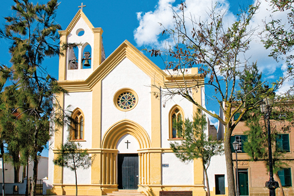
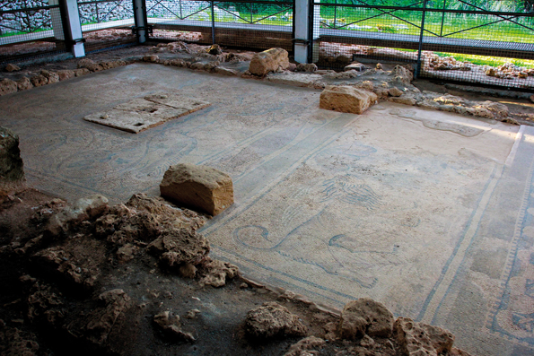

Sant Climent, beaucoup en très peu
À seulement quatre kilomètres de la ville de Maó, s’élève Sant Climent. Centre habité par moins de deux mille personnes qui mérite qu’on s’y arrête. Sant Climent compte presque 200 ans d’histoire, mais elle conserve encore les airs d’antan, ceux d’un village tranquille et familier. Cela prouve à nouveau que l’expression d’île de la tranquillité est bien plus qu’un cliché. C’est une réalité.
Au niveau architectonique, Sant Climent est connue pour son église, aux touches blanches et jaunes. Elle se trouve sur la place du village, lieu où se concentre toute la vie du centre-ville. Asseyez-vous et contemplez cet environnement et vous verrez que l’on peut vivre à un autre rythme.
Si vous aimez la bonne musique, ne perdez pas l’occasion d’assister aux soirées de jazz qu’organise le Casino de Sant Climent, un bar d’habitués qui sait émerveiller aussi bien les papilles que l’ouïe de ceux qui le visite. Ses tapas sont exquises.
En parlant de papilles, à Sant Climent on fait une bière cent pour cent minorquine, produite sur l’île avec les machines les plus sophistiquées. Imaginez-vous, boire une excellente bière bien fraîche sous le soleil de Minorque et l’air pur de la Méditerranée. Existe-t-il un meilleur plan ? Eh bien oui, il existe, puisque Sant Climent accueille “Es Molí de Foc ”, un des meilleurs restaurants de Minorque. Allez-y ! Vous devez également visiter Can Bernat, magasin de produits typiques de la zone, il est en face de l’église, vous y trouverez la meilleure sélection de l’île.
Près, tout près du village, se cache une des perles du passé de Minorque: la Basilique paléochrétienne de Fornàs de Torelló. La structure de cette construction du VIe siècle ne se conserve pratiquement plus, mais en revanche on peut apprécier la mosaïque romaine qui forme son pavé. Elle est composée de silhouettes de lions et de palmiers représentant la mort et l’arbre de la vie. Observez bien cet endroit, et souvenez-vous que ces dessins que vous contemplez existent depuis 1500 ans. Impressionnant, non?
Près de la basilique vous pouvez apprécier un talayote, et même les restes d’une habitation ronde préhistorique. Approchez-vous et découvrez tout ce que cachent les pierres de Minorque. Réellement, le patrimoine archéologique de Minorque est spectaculaire.
Retournons au centre-ville de Sant Climent. Comme presque tous les villages de Minorque, il a ses propres fêtes patronales. Elles se célèbrent le troisième week-end du mois d’août et les chevaux sont à nouveaux les protagonistes. En revanche Sant Climent, ajoute une touche personnelle. Le lundi après le week-end des fêtes, les “santclimenters” s’embarquent dans une bataille d’eau, le but est de s’amuser. Si vous souhaitez y assister, porter des vêtements appropriés. L’artificielle précipitation a pour habitude d’être torrentielle.
Vous voyez, Sant Climent a beaucoup à vous proposer. Ne perdez pas l’occasion de vous aventurer dans cette enclave, située non loin de l’aéroport.